뽀야와 함께하는 오픈클로 첫걸음 · 2026년 4월 최신판
처음 해보는 분도 따라만 하면 돼요. 약속해요 🐾
⏱ 걸리는 시간: 커피 한 잔 마시는 동안 (약 20~30분)
💻 필요한 것: 윈도우 10 이상 또는 맥 아무거나
📖 기준: 오픈클로 공식 문서 (docs.openclaw.ai) · v2026.7.1-2
🤝 윈도우 전용 상세 가이드: 코난쌤의 WSL 설치 가이드 · Reedo(리도)님의 윈도우 완전 가이드 참고
총 5단계예요. 하나씩 끝낼 때마다 체크해볼까요?
시작하기 전에 딱 두 가지만 깔면 돼요
두 가지 길이 있어요. 하나만 고르면 돼요.
🅐 WSL2 (권장) — 윈도우 안에 리눅스를 깔아서, 그 다음부터는 맥과 완전히 동일하게 진행해요.
🅑 파워셸만 쓰기 — WSL이 안 되거나 부담스러우면 윈도우 그대로 설치해도 돼요.
🅐는 다음 슬라이드, 🅑는 그 다음 슬라이드에서 상세 안내!
Node.js자동차한테 엔진이 필요하듯, 오픈클로한테 Node.js가 필요해요. 한 번만 깔면 끝이고, 이후엔 신경 안 써도 돼요!
오픈클로의 엔진이에요.
이게 있어야 오픈클로가 돌아가요. 한 번만 깔면 끝!
✅ Node.js는 여전히 필수예요. 다만 설치 스크립트가 없으면 알아서 깔아주니, 직접 신경 안 쓰셔도 돼요. (24 LTS 권장 · 23은 지원 안 함)
❌ Git은 필요 없어요. 기본 설치는 npm 방식이라 Git 없이 돌아가요.
윈도우에서 오픈클로 설치, 생각보다 훨씬 간단해요.
wsl --install -d Ubuntu 명령어 한 줄로 리눅스 환경이 세팅되고,
그 다음은 맥과 완전히 동일합니다!
🍎 맥 사용자는 이 페이지 스킵! → "다음" 버튼 누르세요
키보드에서 Windows 키 → "PowerShell" 검색 → "관리자로 실행" 클릭
WSL과 Ubuntu가 함께 설치돼요. 끝나면 컴퓨터를 재시작하세요.
시작 메뉴에서 "Ubuntu" 검색 → 클릭하면 터미널이 열려요.
처음 실행하면 사용자 이름/비밀번호를 만들라고 해요:
Node.js가 없으면 자동으로 설치해줘요. 약 7분 정도 걸려요.
BIOS에서 가상화(VT-x / AMD-V)가 꺼져있을 때 나와요.
→ 컴퓨터 재부팅 → BIOS 진입(보통 F2/DEL) → Virtualization Technology를 Enabled로 변경 → 저장 후 재부팅
Windows 10 버전 2004 미만이면 WSL 명령어 자체가 없어요.
→ 설정 → 시스템 → 정보에서 버전 확인! → Windows Update로 최신 버전 업데이트 먼저!
→ 그래도 안 되면 코난쌤의 WSL 상세 가이드 또는 리도님의 윈도우 가이드를 따라해보세요.
회사/학교 PC에서 Microsoft Store가 정책으로 막혀있을 때 발생해요.
→ 파워셸(관리자)에서 수동 설치:
wsl --install -d Ubuntu --web-download
Store를 거치지 않고 웹에서 직접 다운로드해요.
→ 컴퓨터를 재시작했는지 확인! 재시작 후에도 안 보이면 Microsoft Store에서 "Ubuntu"를 검색해서 직접 설치하세요.
→ 파워셸이 아니라 Ubuntu 터미널에서 실행해야 해요! 시작 메뉴에서 "Ubuntu"를 열어주세요.
앞 슬라이드의 WSL2가 잘 안 되거나 부담스러우면 이 방법만 해도 돼요.
윈도우에 원래 들어있는 파워셸에서 명령어 한 줄이면 끝나요.
🍎 맥 사용자는 이 페이지 스킵! → "다음" 버튼 누르세요
키보드에서 Windows 키 → "PowerShell" 검색 → 그냥 클릭
💡 파워셸은 윈도우에 기본으로 들어있어요. 따로 설치할 필요 없어요. (PowerShell 5 이상이면 OK)
💡 파워셸에서 붙여넣기는 마우스 오른쪽 클릭이에요. Ctrl+V가 아니에요!
공식 윈도우 설치 스크립트예요. Node.js가 없으면 알아서 같이 깔아줘요.
winget → Chocolatey → Scoop 순서로 시도하고, 셋 다 없으면 공식 Node 24를 통째로 내려받아 PATH에 넣어줘요. 그래서 Node를 미리 안 깔아도 돼요.
설치 직후엔 openclaw 를 못 찾는 게 정상이에요. PATH가 새 창부터 적용되거든요.
파워셸이 외부 스크립트를 막고 있는 거예요.
→ 해결법: 이 창에서만 잠깐 허용하고 다시 실행하세요.
현재 창에만 적용돼서 안전해요. 창을 닫으면 원래대로 돌아가요.
→ 해결법: 파워셸 창을 완전히 닫고 새로 열어보세요. 제일 흔한 케이스예요.
그래도 안 되면 Node가 제대로 깔렸는지 먼저 확인:
오픈클로는 Node 23을 지원하지 않아요.
→ 해결법: 24 LTS로 바꿔주세요.
아니요, 필요 없어요. 기본 설치는 npm 방식이라 Git 없이 돌아가요.
개발자용 git 설치 방식(-InstallMethod git)을 고를 때만 필요하고, 그마저도 없으면 스크립트가 알아서 챙겨줘요.
오픈클로가 돌아가려면 Node.js가 필요해요. 24 LTS 권장이고, 22.22.3 이상도 괜찮아요.
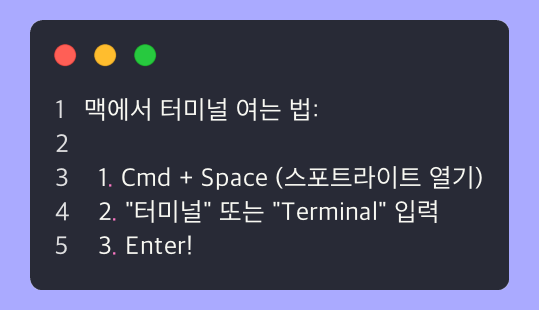
Homebrew가 없는 경우, 먼저 이걸 복사해서 터미널에 붙여넣기:
비밀번호를 물어보면 맥 로그인 비밀번호를 입력하세요. (화면에 안 보이는 게 정상!)
Homebrew 설치 후 (또는 이미 있는 경우):
Homebrew 설치가 안 된 거예요.
→ 해결법:
위의 Homebrew 설치 명령어를 먼저 실행하세요. 설치 후 터미널을 껐다 다시 열어야 인식돼요!
Apple Silicon 맥(M1/M2/M3/M4)이면 추가로 이것도 실행:
Xcode 명령줄 도구가 필요해요.
→ 해결법: 팝업이 뜨면 "설치" 클릭. 안 뜨면 수동으로:
→ 해결법: 터미널을 완전히 껐다가 다시 열어보세요.
그래도 안 되면 nodejs.org에서 .pkg 파일을 직접 다운받아 설치해도 돼요.
공식 자동 설치 스크립트로 한 줄이면 끝! (수동 설치는 npm터미널에서 프로그램을 깔아주는 도구예요. 앱스토어에서 "다운로드" 누르는 것처럼, 여기선 글자로 "이거 깔아!" 하면 돼요.으로도 가능)
전체 진행률: 35%
맥과 완전히 동일한 명령어예요! Node.js도 없으면 자동 설치.
맥도 동일해요! 이 한 줄이면 끝.
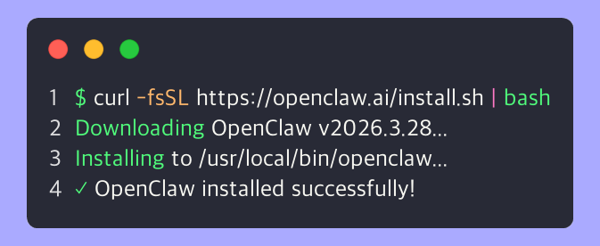
셸 경로가 아직 업데이트 안 된 거예요.
→ 해결법: 터미널을 완전히 껐다가 새로 열어보세요.
그래도 안 되면 npm으로 수동 설치해보세요:
권한 문제예요.
→ 해결법 (맥):
→ 해결법 (WSL/Ubuntu):
인터넷 연결 문제예요.
→ 해결법:
Node.js 버전이 너무 낮아요.
→ 해결법: Chapter 1-2로 돌아가서 Node.js 24 LTS를 설치하세요. (23 버전은 지원 안 함!)
보안 동의 → AI 모델 선택 → 게이트웨이 설정을 한 번에!
전체 진행률: 45%
이 한 줄이면 돼요. 설정 마법사가 시작되고, 하나씩 물어보는 대로 답하면 됩니다!
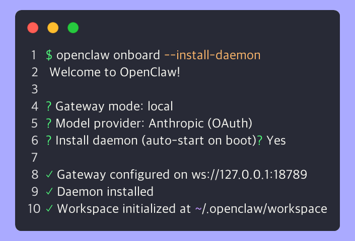
온보딩을 시작하면 가장 먼저 보안 경고 화면이 나타나요.
OpenClaw is a hobby project and still in beta.
This bot can read files and run actions if tools are enabled.
A bad prompt can trick it into doing unsafe things.
(요약: "오픈클로는 개인용 에이전트이고, 아직 베타입니다. 도구가 켜져 있으면 파일을 읽거나 실행할 수 있어요.")
보안 동의를 넘기면 설정 방식을 고르는 화면이 나와요. 네 개 중에 하나예요.
| Keep existing model config | 이미 쓰던 설정 유지 — 처음이면 해당 없음 |
| ● QuickStart (recommended) | ← 이거 고르세요! |
| Manual setup | 하나하나 직접 정하기 — 오늘은 불필요 |
| Import from Codex | 다른 도구 설정 가져오기 — 오늘은 불필요 |
방향키 ↑ ↓ 로 움직이고 Enter 로 선택해요. 마우스로는 안 골라져요!
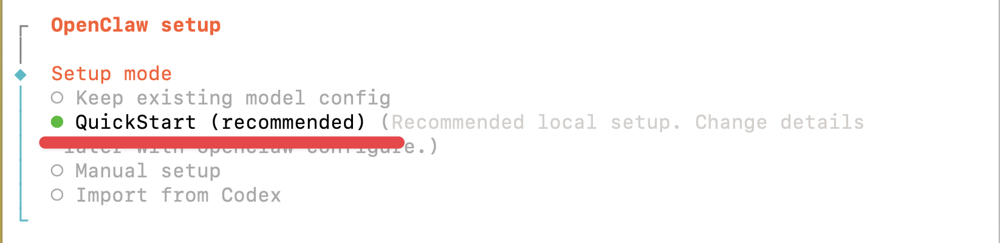
QuickStart를 고르면 기본 설정 요약이 나와요. 그냥 넘어가면 됩니다!
| Gateway port | 18789 |
| Gateway bind | Loopback (127.0.0.1) — 내 컴퓨터에서만 |
| Gateway auth | Token (기본값) |
| Tailscale | Off |
뽀야의 두뇌를 골라주세요! 어떤 AI를 쓸 건가요?
전체 진행률: 55% — 핵심 단계!
이제 "Model/auth provider" 선택 화면이 나타나요.
뽀야한테 어떤 AI 두뇌를 연결할지 고르는 거예요!
※ Claude CLI는 Provider 목록 1티어가 아니라 Anthropic provider 안의 인증 방식이에요. 그래서 먼저 Anthropic을 고르고, 다음 단계에서 인증 방식을 Claude CLI로 선택하면 돼요.
※ 실제 항목 라벨/순서는 OpenClaw 버전에 따라 살짝 다를 수 있어요. 핵심은 Anthropic → Claude CLI 두 단계.
Claude Max/Pro 구독자라면 이거! Provider에서 Anthropic을 고른 다음, 인증 방식에서 Claude CLI를 선택하세요.
Claude 모델을 OAuth로. 구독자 아닌 분도 OK. Provider에서 Anthropic → 인증 방식에서 OAuth.
GPT 모델 사용. Codex OAuth로 간편하게.
Ollama(로컬), Chutes(무료 크레딧), OpenRouter, Google, xAI, Mistral 등.
| Provider | 인증 방식 | 뭘 하면 되나요? |
|---|---|---|
| Anthropic → Claude CLI | 토큰 자동 공유 | 이미 claude로 로그인돼있으면 자동 연결! 안 깔렸으면 Claude Code CLI 먼저 설치 후 claude /login |
| Anthropic → OAuth | 브라우저 로그인 | 브라우저가 열리면 로그인 → "허용" 클릭 → 끝! |
| OpenAI | Codex OAuth / API 키 | 브라우저 로그인 또는 API 키 붙여넣기 |
| Ollama | 없음 (로컬) | Ollama가 설치되어 있으면 자동 연결! |
| 기타 | API 키 | 해당 서비스 사이트에서 API 키 복사 → 붙여넣기 |
Provider에서 Anthropic을 고르면, 다음 화면에서 인증 방식을 묻습니다. 여기서 Claude CLI를 고르면 이미 깔려있는 claude CLI의 토큰을 자동으로 빌려 쓰고, 별도 OAuth 브라우저가 안 떠요!
※ 실제 화면 라벨/문구는 OpenClaw 버전에 따라 조금 다를 수 있어요.
→ 해결법:
→ 각 서비스의 API 키 발급 페이지:
키를 잘못 입력했거나 만료됐어요.
→ 해결법: openclaw onboard 재실행 후 키를 다시 붙여넣으세요. 앞뒤 공백이 없는지 확인!
Claude CLI는 Provider 1티어 메뉴가 아니라 Anthropic 안의 인증 방식이에요. 또 Claude Code CLI가 설치/로그인되지 않았으면 표시되지 않을 수 있어요.
→ 체크리스트:
설치/로그인 끝나면 openclaw onboard ...를 재실행하세요.
→ 해결법: claude /login으로 다시 로그인 후 openclaw onboard ... 재실행
나머지 질문에 답하고, 모든 게 잘 됐는지 확인해요
전체 진행률: 60%
AI 모델을 골랐으면, 마법사가 몇 가지 더 물어봐요. 대부분 Enter(기본값)로 넘기면 됩니다!
| 질문 | 뭐라고 하면 되나요? |
|---|---|
| Default model | 그냥 Enter (기본값 사용 — 선택한 AI의 최신 모델) |
| Workspace directory | 그냥 Enter (기본값: ~/.openclaw/workspace) |
| Install daemon뒤에서 조용히 일하는 프로그램이에요. 이걸 깔아두면 컴퓨터 켤 때 오픈클로가 알아서 켜져요. 매번 수동으로 안 켜도 됨!? | Yes (컴퓨터 켤 때 자동 시작) — 강력 추천! |
※ 이어서 스킬 · 채널 · 웹서치 단계도 물어봐요. 지금은 전부 Enter로 넘기거나 skip을 골라도 괜찮아요 — 텔레그램·슬랙은 Chapter 4에서 명령어로 따로 붙일 거니까요. 🐾
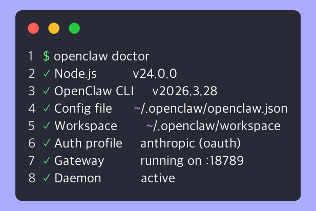
리눅스/WSL에서 파일 감시자 한도 초과예요.
→ 해결법 (WSL/Ubuntu):
다른 프로그램이 이미 그 포트를 쓰고 있어요.
→ 해결법:
→ 해결법: 어떤 항목에 ✗가 나왔는지에 따라 다릅니다:
| ✗ 항목 | 해결법 |
|---|---|
| Auth / OAuth | openclaw onboard 재실행 후 인증 다시 진행 |
| Gateway | openclaw gateway로 수동 시작 |
| Node version | Node.js 24 재설치 (Chapter 1-2) |
| Model | openclaw models status로 확인 후 재설정 |
→ 해결법: 온보딩을 리셋하고 처음부터 다시 할 수 있어요:
텔레그램에서 뽀야와 대화하려면, "봇 껍데기"를 먼저 만들어야 해요
전체 진행률: 70% — 거의 다 왔어요!
텔레그램에서 돌아가는 자동 응답 계정이에요.
여러분이 메시지를 보내면, 이 봇이 받아서 뽀야한테 전달하고,
뽀야가 생각해서 답한 걸 다시 텔레그램으로 보내주는 구조예요.
텔레그램에는 @BotFather라는 특별한 봇이 있어요.
이 친구한테 말하면 새 봇을 만들어줘요. (봇을 만드는 봇...! 🤯)
텔레그램 검색창에 botfather를 검색하세요.
파란 체크 ✅ 표시가 있는 공식 계정이에요. 가짜가 많으니 꼭 확인!
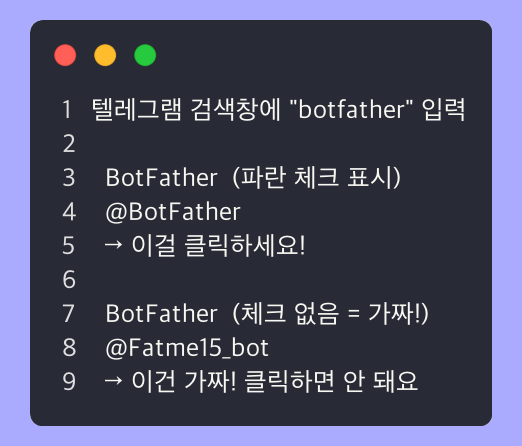
BotFather 채팅창에 /newbot을 입력하고 보내세요:
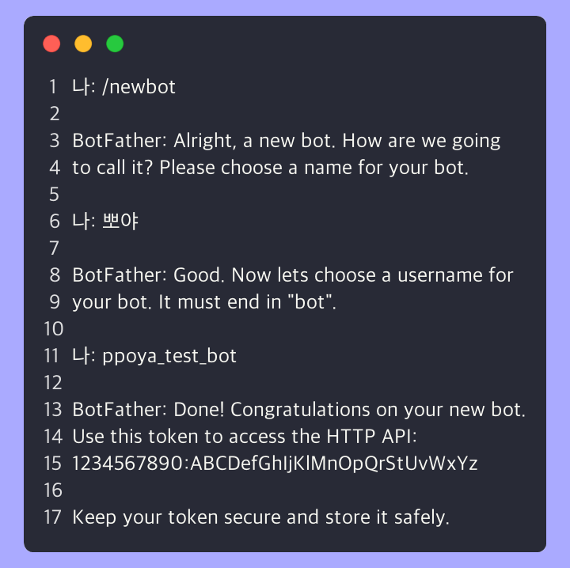
BotFather가 "How are we going to call it?" 하고 물어봐요.
봇 이름을 입력하면, 다음으로 유저네임을 물어봐요.
| 질문 | 뭐라고 하면 되나요? | 예시 |
|---|---|---|
| 봇 이름 (화면에 보이는 이름) |
한글 OK, 자유롭게 | 시고르 |
| 봇 유저네임 (고유 ID, 영문) |
영문 + 반드시 bot으로 끝나야 함 | bbojjaketbot |
성공하면 BotFather가 축하 메시지와 함께 봇 토큰을 보내줘요:
유저네임이 이미 누가 쓰고 있어요.
→ 해결법: 다른 유저네임을 시도하세요. 숫자를 붙이면 쉬워요:
예: ppoya_bot → ppoya_2026_bot, my_ppoya_bot 등
유저네임이 bot으로 끝나지 않아요.
→ 해결법: 끝에 _bot 또는 bot을 붙이세요.
예: ppoya → ppoya_bot ✅, ppoyabot ✅
→ 해결법:
방금 만든 봇 토큰을 오픈클로에 등록해요.
실제 예시:
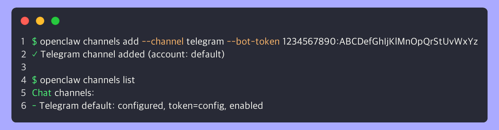
봇 토큰이 잘못됐어요.
→ 해결법:
채널 추가는 게이트웨이 없이도 가능해요.
→ 해결법: 이 에러는 무시하고 다음 단계(게이트웨이 실행)로 넘어가세요.
팀이 같이 쓰는 자리에 봇을 앉혀요
봇을 붙이려면 앱 설치 권한이 필요한데, 회사 슬랙은 대부분 관리자 승인이 필요해서 오늘 안에 안 끝나요.
→ slack.com/get-started 에서 개인 워크스페이스를 무료로 하나 만들어주세요. 3분이면 돼요. 회사 슬랙은 오늘 익힌 다음에 붙이면 됩니다.
api.slack.com/apps 접속 → Create New App → From an app manifest → 내 워크스페이스 선택
{
"display_information": {
"name": "뽀야",
"description": "OpenClaw AI 에이전트"
},
"features": {
"bot_user": { "display_name": "bboya", "always_online": true },
"app_home": {
"home_tab_enabled": true,
"messages_tab_enabled": true,
"messages_tab_read_only_enabled": false
},
"assistant_view": {
"assistant_description": "OpenClaw AI 에이전트",
"suggested_prompts": [
{ "title": "What can you do?", "message": "What can you help me with?" },
{
"title": "Summarize this channel",
"message": "Summarize the recent activity in this channel."
},
{ "title": "Draft a reply", "message": "Help me draft a reply." }
]
},
"slash_commands": [
{
"command": "/openclaw",
"description": "Send a message to OpenClaw",
"should_escape": false
}
]
},
"oauth_config": {
"scopes": {
"bot": [
"app_mentions:read",
"assistant:write",
"channels:history",
"channels:read",
"chat:write",
"commands",
"emoji:read",
"files:read",
"files:write",
"groups:history",
"groups:read",
"im:history",
"im:read",
"im:write",
"mpim:history",
"mpim:read",
"mpim:write",
"pins:read",
"pins:write",
"reactions:read",
"reactions:write",
"usergroups:read",
"users:read"
]
}
},
"settings": {
"socket_mode_enabled": true,
"event_subscriptions": {
"bot_events": [
"app_home_opened",
"app_mention",
"assistant_thread_context_changed",
"assistant_thread_started",
"channel_rename",
"member_joined_channel",
"member_left_channel",
"message.channels",
"message.groups",
"message.im",
"message.mpim",
"pin_added",
"pin_removed",
"reaction_added",
"reaction_removed"
]
}
}
}
슬랙 매니페스트는 순수 JSON만 받아요. 주석이 있으면 파싱 에러가 나요.
Next → 미리보기 확인 → Create 클릭. 이러면 권한·이벤트·Socket Mode가 한 번에 다 켜진 상태로 만들어져요.
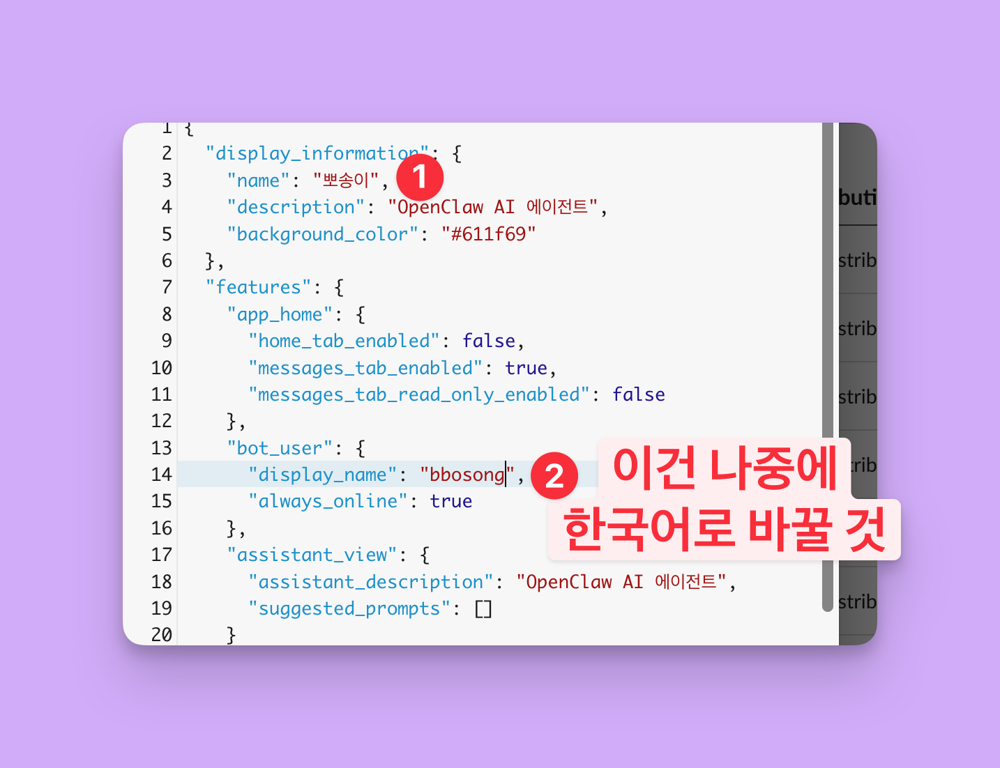
매니페스트엔 영문 아이디를 넣었으니, 슬랙에서 @뽀야 처럼 한글로 부르려면 한 번 더 손봐야 해요.
왼쪽 메뉴 App Home → Your App's Presence in Slack → Edit → Display Name (Bot Name) 을 한글로 → Save
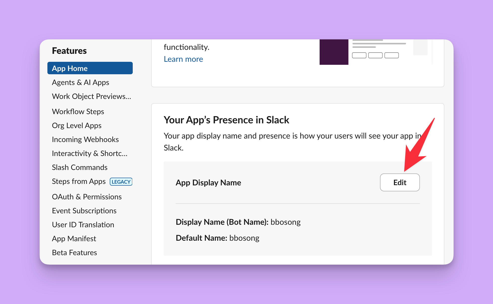
Socket Mode는 켜졌지만 앱 토큰은 자동으로 안 만들어져요. 직접 발급해요.
왼쪽 메뉴 Basic Information → 아래로 스크롤 → App-Level Tokens → Generate Token and Scopes
이름은 아무거나(bboya) → Add permission by Scope 에서 connections:write 하나만 선택 → Generate
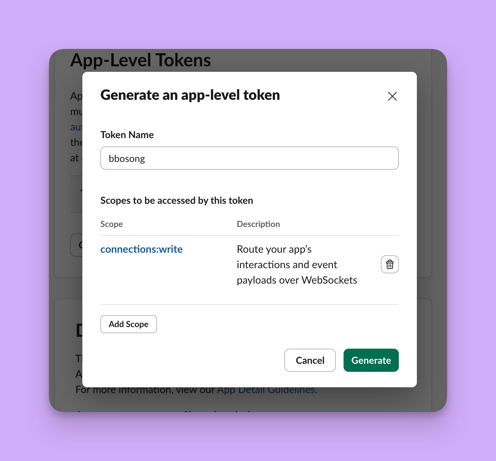
→ 나오자마자 메모장에 붙여넣어 두세요. xapp- 으로 시작해요.
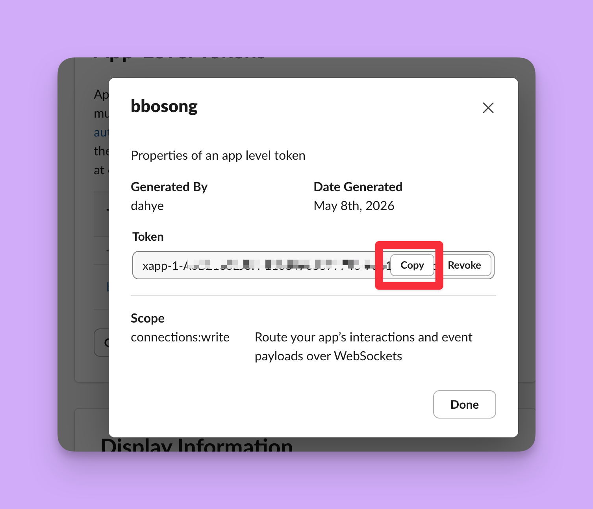
왼쪽 메뉴 Install App → Install to Workspace → 권한 허용
Bot User OAuth Token 이 나와요 → 이것도 메모장에! xoxb- 로 시작해요.
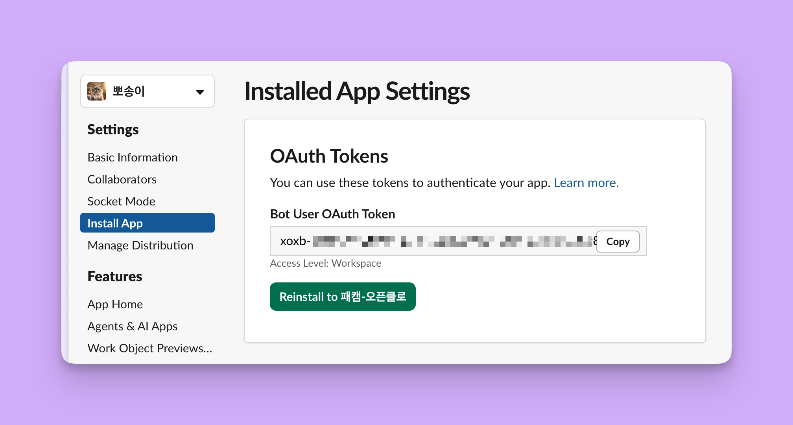
텔레그램 때와 똑같아요. 토큰 두 개를 그대로 넣어주면 끝나요.
슬랙 왼쪽 사이드바 맨 아래 앱 영역에서 내 봇을 찾아 눌러요.
💡 "앱"이 안 보이면 — 그 영역의 점 3개(⋯) → 필터 → "모두" 선택
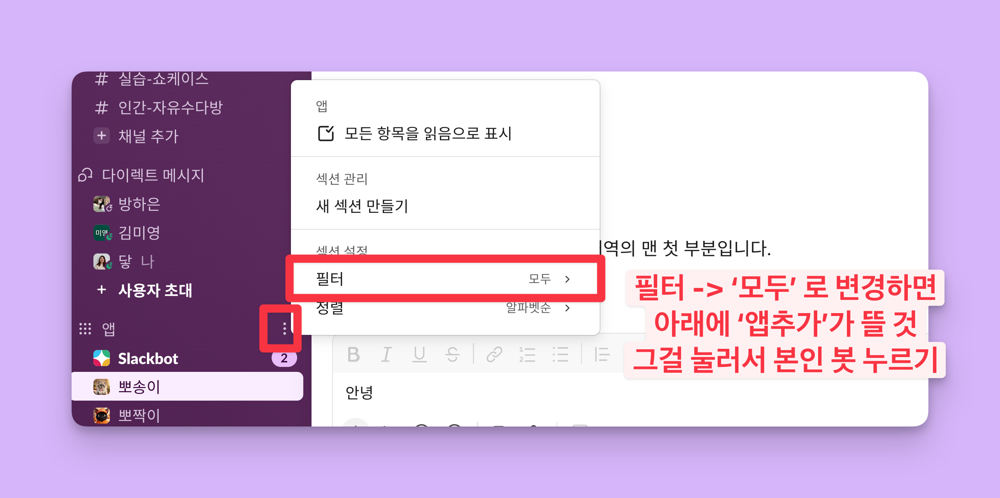
DM 창에 안녕? 하고 보내보세요.
텔레그램 때와 같아요. 새 창에서 확인해보세요:
openclaw pairing list slack → 코드가 보이면 openclaw pairing approve slack <코드>
DM 말고 채널에서 쓰려면 초대를 해야 해요. 사람이랑 똑같아요.
그다음 @내봇 안녕 처럼 이름을 불러서 말 걸어요. 채널에서는 불러야 대답해요 — 안 그러면 사람들 대화에 계속 끼어들거든요.
마지막 단계예요. 진짜 거의 다 된 거예요!
전체 진행률: 90% — 조금만 더!
오픈클로의 두뇌(AI)와 텔레그램(채널)을 이어주는 다리예요.
이 다리가 켜져 있어야 메시지가 왔다갔다 할 수 있어요.
온보딩에서 daemon을 설치했으면 이미 돌아가고 있을 수 있어요!
로그가 쭉 올라오면 성공이에요!
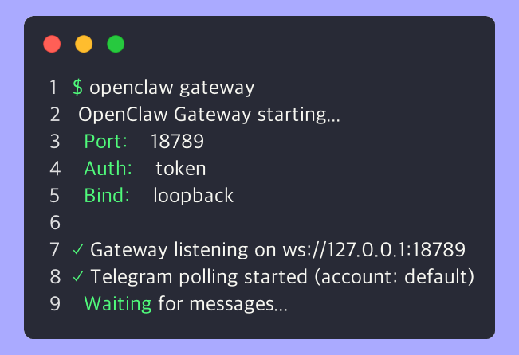
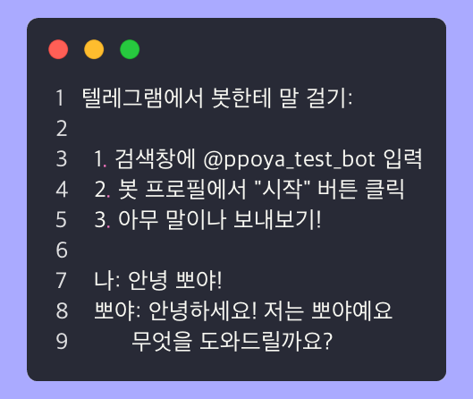
→ 하나씩 체크하세요:
| 확인 항목 | 확인 방법 |
|---|---|
| 1. 게이트웨이 켜져 있나? | openclaw gateway status |
| 2. 텔레그램 채널 연결됐나? | openclaw channels list |
| 3. API 키 유효한가? | openclaw doctor |
| 4. /start 보냈나? | 봇한테 /start 먼저 보내기 |
봇 토큰 문제일 가능성이 높아요.
→ 해결법:
보안 설정(pairing)이 켜져 있는 거예요.
→ 해결법: 터미널에서 페어링을 승인하세요:
→ 해결법:
여러분은 이제 오픈클로 사용자예요 🦞
| 명령어 | 기능 |
|---|---|
| openclaw --version | 버전 확인 |
| openclaw doctor | 전체 설정 점검 |
| openclaw gateway status | 게이트웨이 상태 |
| openclaw gateway | 게이트웨이 수동 실행 |
| openclaw channels list | 연결된 채널 확인 |
| openclaw dashboard | 웹 대시보드 열기 |
| openclaw configure | 설정 변경 |
| openclaw update | 최신 버전 업데이트 |
지금 설치한 봇은 기본 성격이에요. SOUL.md 파일을 수정하면 봇의 말투, 성격, 역할을 커스텀할 수 있어요!
SOUL.md의 5가지 구성요소:
| 항목 | 설명 | 예시 |
|---|---|---|
| Identity | 이름, 역할, 기본 정보 | "너는 뽀야, 운영 비서" |
| Mission | 왜 존재하는가 | "반복 업무를 자동화한다" |
| Personality | 성격, 행동 방식 | "친근하지만 프로페셔널" |
| Boundaries | 하면 안 되는 것 | "개인정보 공유 금지" |
| Tone | 말투 스타일 | "항상 존댓말, ~해요 체" |
SOUL.md 파일 위치: ~/.openclaw/workspace/SOUL.md
| 자료 | 설명 |
|---|---|
| 코난쌤의 WSL 설치 상세 가이드 | 가상 머신 플랫폼 활성화, 커널 업데이트까지 단계별 상세 설명! |
| Reedo(리도)님의 윈도우 완전 가이드 | WSL부터 보안 설정까지 윈도우 전용 5단계 가이드. 스크린샷 풍부! |
📖 다음 강의: 뽀야한테 지식 가르치기
문서를 올리면 뽀야가 그걸 기반으로 대답할 수 있어요.
CS 자동 응답, 인수인계 문서화의 첫걸음이에요!
각 단계에서 이미 설명했지만, 한눈에 보고 싶을 때 여기를 보세요.
| 에러 | 원인 | 해결 |
|---|---|---|
| 0x80370102 / WslRegisterDistribution failed | 가상화 비활성 | BIOS에서 VT-x/AMD-V 활성화 |
| 0x80070422 / Store 오류 | Microsoft Store 차단 | wsl --install -d Ubuntu --web-download |
| no distributions | Ubuntu 미설치 | wsl --install -d Ubuntu |
| wsl not found | 윈도우 버전 낮음 | Windows Update 실행 |
💡 WSL이 끝내 안 되면 Chapter 1-1 대안(파워셸 방식)으로 우회하세요. WSL 없이도 설치됩니다.
| 에러 | 원인 | 해결 |
|---|---|---|
| 스크립트를 실행할 수 없으므로 | 실행 정책 차단 | Set-ExecutionPolicy -Scope Process -ExecutionPolicy Bypass |
| openclaw 용어를 인식할 수 없습니다 | PATH가 새 창부터 적용 | 파워셸 닫고 새로 열기 |
| npm ERR! engine Unsupported | Node 23 사용 중 | winget install OpenJS.NodeJS.LTS |
| iwr 명령을 찾을 수 없음 | PowerShell 4 이하 | Windows Update로 PowerShell 5+ 확보 |
💡 Git은 안 깔아도 돼요. 기본 npm 설치 방식은 Git 없이 동작해요.
| 에러 | 원인 | 해결 |
|---|---|---|
| node not found | 미설치 or 경로 | 재설치 + 터미널 재시작 |
| 버전 낮음 (v12, v16) | 오래된 저장소 | NodeSource 24.x로 재설치 |
| brew not found | Homebrew 미설치 | Homebrew 설치 스크립트 실행 |
| xcode-select 에러 | 개발자 도구 없음 | xcode-select --install |
| 에러 | 원인 | 해결 |
|---|---|---|
| openclaw not found | 경로 미등록 | 터미널 재시작 or npm install -g openclaw |
| EACCES / Permission | 권한 부족 | sudo 붙이기 |
| network error | 인터넷/방화벽 | VPN 끄기, 네트워크 확인 |
| engine unsupported | Node 버전 낮음 | Node.js 24 설치 |
| 에러 | 원인 | 해결 |
|---|---|---|
| 보안 경고에서 막힘 | Yes 안 누름 | "Yes" 선택 후 진행 |
| OAuth 브라우저 안 열림 | WSL/터미널 환경 | URL 복사 → 브라우저에 직접 붙여넣기 |
| 401 Unauthorized | 인증 만료/키 오류 | openclaw onboard 재실행 |
| Invalid API key | 키 오입력/공백 포함 | 키 다시 복사 (앞뒤 공백 제거) |
| 모델 선택 모르겠음 | 15개+ 옵션 혼란 | Anthropic(OAuth) 또는 OpenAI 추천 |
| ENOSPC | 파일감시 한도 | sysctl.conf에 inotify 값 추가 |
| Port 18789 in use | 포트 충돌 | lsof -i :18789 → kill |
| 처음부터 다시 하고 싶음 | 설정 꼬임 | openclaw onboard --reset |
| 에러 | 원인 | 해결 |
|---|---|---|
| username taken | 중복 이름 | 숫자 붙여서 다시 시도 |
| Invalid bot token | 토큰 오입력 | BotFather에서 /mybots로 재확인 |
| 봇 무응답 | 다양한 원인 | 게이트웨이·채널·API키·/start 순서로 체크 |
| 페어링 필요 | 보안 설정 | openclaw pairing approve |
| 응답 느림 | 첫 로딩/크레딧 | 1분 대기, 크레딧 확인 |